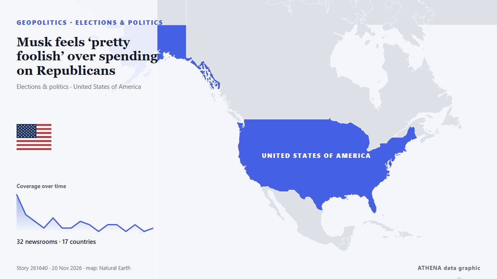

ATHENA Glaux Intelligence — Παγκόσμια ειδησεογραφική ανάλυση — κάθε αριθμός εξηγημένος
Κάθε είδηση, ελεγμένη σε πολλές χώρες.
Το ATHENA Glaux παρακολουθεί 635 ειδησεογραφικά μέσα σε όλο τον κόσμο. Μια είδηση γίνεται επαληθευμένο γεγονός μόνο όταν την αναφέρουν ανεξάρτητα μέσα. Κάθε γεγονός δείχνει ποιος το ανέφερε πρώτος και έναν βαθμό κινδύνου με τους λόγους του.
Αναφορές έρχονται από ανεξάρτητα μέσα — όταν δύο συναντηθούν στην ίδια ιστορία, γίνεται επιβεβαιωμένο γεγονός.
Πώς ελέγχει το ATHENA μια είδηση
- ΣυλλογήΟι αναφορές φτάνουν από ανεξάρτητα μέσα σε πολλές χώρες.
- ΑντιστοίχισηΌταν δύο μέσα συναντιούνται στην ίδια είδηση, γίνεται επαληθευμένο γεγονός.
- ΕξήγησηΚάθε γεγονός δείχνει ποιος ήταν πρώτος, πόσο εξαπλώθηκε και γιατί ο κίνδυνος είναι αυτός.

ΓεωπολιτικήMusk feels ‘pretty foolish’ over spending on Republicans
NEW YORK: Elon Musk said on Wednesday he felt “pretty foolish” about the amount of money he spent on this year’s US midterm elections after Republicans suffered sweeping losses. από Dawn
Οι τίτλοι των ειδήσεων παρουσιάζονται στα αγγλικά, όπως δημοσιεύτηκαν.
Limiting Nuclear Weapons Will Be Hard, Says Trump After Meetings With Xi, Putin
"I love the concept of it but in terms of pure negotiation, it's a very hard thing for me as a president to do," Trump told Reuters by phone as he flew back to Washington from his trilateral summit… από NDTV World
Xi wants stronger bonds with Australia as Albanese defends Putin rebuke
“I made very clear to President Putin directly yesterday that he needs to stop his war, and he needs to stop it now,” Albanese said. από Sydney Morning Herald

Πλοία στα θαλάσσια περάσματα τώρα
Ζωντανές μετρήσεις AIS. Πατήστε ή περάστε πάνω από μια μπάρα για λεπτομέρειες.
UK PM urges Google to remove Russell Brand's innocence claim video
The convicted comedian and influencer insisted he is innocent in a statement read out by his wife in a video uploaded to YouTube. από Free Malaysia Today
COP31 draft climate deal removes mention of fossil fuels
A new draft agreement for COP31 has been released by co-host Australia, omitting references to fossil fuels. από Arab News
Russian national accused of spying on employees of Silicon Valley defense and technology company
A Russian man who prosecutors say was recruited by his government has been charged with stalking employees of a Silicon Valley technology and defense company in order to gather intelligence, the… από The Canadian Press (via CityNews)
Γεωπολιτική, Πολιτική & Ασφάλεια
Περισσότερα ›Russia Pounds Kyiv With Ballistic Missiles, Fires Erupt Across Capital
Russian forces launched a new ballistic missile attack on Kyiv early Friday, Nov. από Kyiv Post
- Πόλεμοι & συγκρούσεις
Saudi-led coalition says it intercepted Houthi ballistic missiles, destroyed launcher
- Εκλογές & πολιτική
Mary Peltola wins in Alaska, securing 56-44 US Senate majority for Democrats
- Εκλογές & πολιτική
Trump pushes decision on new Iran strikes into next year: ‘We’ve got time’
- Εκλογές & πολιτική
Mosque torched in Israel sparks political backlash against Netanyahu
Οικονομία, Χρηματοοικονομικά & Αγορές
Περισσότερα ›Anthropic IPO will create thousands of multimillionaire employees
The average Anthropic employee could be worth over $40 million after the company's IPO today, according to SEC filings and investors. από CNBC World
- Πληθωρισμός & επιτόκια
Gold hits 14-month low as strong dollar, rate bets weigh
- Πληθωρισμός & επιτόκια
Japan's core inflation accelerates to 2.2% in October
- Πληθωρισμός & επιτόκια
Fed's Paulson backs further rate hikes
- Μετοχές, ομόλογα & αγορές
Anthropic valuation soars above £1.5 trillion in record stock market float
Εμπόριο, Βιομηχανία & Υποδομές
Περισσότερα ›S’porean charged with trafficking 19kg of cannabis at Ipoh airport
No plea was recorded from Chen Long in the Ipoh magistrates' court as the case falls under the High Court's jurisdiction. από Free Malaysia Today
- Εφοδιαστικές αλυσίδες
Sallaum Logistics opens inland customs bonded compound in the Port of Limburg, Genk
- Κατασκευές & υποδομές
Russia cannot dictate 'unrealistic security demands': UK premier
- Κατασκευές & υποδομές
A third Ukrainian strike in 4 days halts rail traffic on Russia's Kerch Bridge to Crimea
- Ναυτιλία & λιμάνια
Egypt, Libya sign cooperation agreements after talks in Cairo
Ενέργεια, Πόροι & Περιβάλλον
Περισσότερα ›Nepal flood victims' families may wait up to a year for death certificates
KUALA LUMPUR: Families of Malaysians missing in the Nepal floods could face another three to 12 months, or longer, to obtain certificates of presumption of death, Malaysia Solidarity Families in Hope… από New Straits Times
- Ακραία καιρικά & φυσικές καταστροφές
Cyclone Akvan heads towards India’s coast; rain likely across Bangladesh throughout the day
- Ακραία καιρικά & φυσικές καταστροφές
Cyclone Akvan LIVE: Storm likely to make landfall near Odisha's Gopalpur tomorrow; 3 Andhra districts on red alert
- Κλίμα & κλιματική πολιτική
PACNEWS THREE, 20 NOVEMBER 2026
- Πετρέλαιο & φυσικό αέριο
Everllence secures first order for methane dual-fuel 8S50ME-GI Mk10.7 engine
Τεχνολογία, ΤΝ & Κυβερνοασφάλεια
Περισσότερα ›Trump ousts cyber director after tech outages spark criticism
The Trump administration has faced criticism over its response to the tech outages. από The Straits Times
- Κυβερνοασφάλεια
Hackers Leak Visa, Mastercard and JPMorgan Customer Data
- Τεχνητή νοημοσύνη
Anthropic’s blockbuster debut tests Wall Street’s faith in AI boom
- Επεξεργαστές & υπολογιστική
US approved nearly 900,000 Nvidia and AMD AI chips for China. Raises more questions than answers.
- Τεχνητή νοημοσύνη
The seven Anthropic founders who are about to become multi-billionaires
Επιχειρήσεις, Εταιρείες & Επενδύσεις
Περισσότερα ›- Κλάδοι & εταιρικοί κίνδυνοι
General Pants Co enters voluntary administration, putting hundreds of jobs at risk
- Εταιρική στρατηγική
APEC live: China releases leaders' statement after its disappearance from APEC website
- Εταιρική στρατηγική
Sila Inks Long-Term Offtake Deal with Panasonic Energy to Power Domestic Battery Production
- Πτωχεύσεις & αναδιαρθρώσεις
Target for landmine-free Zimbabwe by 2030 threatened by aid cuts
Δυστυχήματα & έκτακτες ανάγκες
Περισσότερα ›Fire tears through paper mill overnight in Vietnam's Can Tho
A fire broke out at Lee & Man Vietnam's paper mill in Can Tho City, southern Vietnam on Thursday night, engulfing about 20,000 square meters of its raw material storage area and remaining… από Tuoi Tre News
- Δυστυχήματα & έκτακτες ανάγκες
Six bodies recovered from rubble after explosion in residential building in Tbilisi - VIDEO - UPDATED - 5
- Δυστυχήματα & έκτακτες ανάγκες
Bayesian crew unaware of safety risk before deadly sinking, British report finds
- Δυστυχήματα & έκτακτες ανάγκες
Prisoner allegedly 'beaten and set on fire by his son' in vicious cell attack
- Δυστυχήματα & έκτακτες ανάγκες
Helicopter was flying ‘extremely’ close to water before deadly crash in Florida, NTSB says
Τρεις τρόποι να διαβάσετε σήμερα
Ξεκινήστε από αυτόν που ταιριάζει στον χρόνο σαςΕπαληθευμένα γεγονότα
Κατά σειρά έκτασης της κάλυψης
- Trump bought up to $265,000 of Nvidia stock in September, disclosure shows144 μέσα · 47 χώρεςΚίνδυνος 4.4
- Today in Korean history74 μέσα · 33 χώρεςΚίνδυνος 4.0
- Κίνδυνος 5.9
- A brief history of Nvidia’s recent stock fluctuations59 μέσα · 28 χώρεςΚίνδυνος 3.7
- Riyadh tower damaged in Houthi missile attack32 μέσα · 20 χώρεςΚίνδυνος 6.5
Γραφείο Ανάλυσης
Κάντε μια ερώτηση και διαβάστε τεκμηριωμένη αξιολόγηση μιας βασικής είδησης, μαζί με το τι θα την διέψευδε.
Ανοίξτε το Γραφείο Ανάλυσης ›Η σημερινή εικόνα
| 07:00 | 581 |
|---|---|
| 08:00 | 579 |
| 09:00 | 399 |
| 10:00 | 495 |
| 11:00 | 493 |
| 12:00 | 476 |
| 13:00 | 627 |
| 14:00 | 597 |
| 15:00 | 681 |
| 16:00 | 524 |
| 17:00 | 487 |
| 18:00 | 700 |
| 19:00 | 448 |
| 20:00 | 628 |
| 21:00 | 656 |
| 22:00 | 637 |
| 23:00 | 584 |
| 00:00 | 433 |
| 01:00 | 392 |
| 02:00 | 499 |
| 03:00 | 526 |
| 04:00 | 545 |
| 05:00 | 479 |
| 06:00 | 463 |
Κίνδυνος των σημερινών γεγονότων
Αναδυόμενα σήματα
- Απότομη αύξηση · Ενεργό τώραNational Budget
- Απότομη αύξηση · Ενεργό τώραRohingya
- Νέο όνομα στις ειδήσεις · Ενεργό τώραSean Cairncross
- Απότομη αύξηση · Ενεργό τώραCoalition
- Απότομη αύξηση · Ενεργό τώραAnthropic's
Μείνετε ενημερωμένοι
ATHENA Weekly Risk Picture
Οι μεγαλύτεροι γεωπολιτικοί, οικονομικοί και ναυτιλιακοί κίνδυνοι της εβδομάδας, διασταυρωμένοι και βαθμολογημένοι.
Κάθε Παρασκευή στις 08:00 ώρα Ελλάδας · δωρεάν · στα αγγλικά
Δωρεάν εγγραφήΤο ATHENA στο Telegram
Οι ειδήσεις τη στιγμή που δημοσιεύονται: έκτακτα γεγονότα με κίνδυνο 6 ή περισσότερο, ωριαία σύνοψη, ενημερώσεις κινδύνου και η ημερήσια ενημέρωση στις 10:00.
Δωρεάν · αναρτήσεις στα αγγλικά · αποχωρείτε όποτε θέλετε
Είσοδος στο κανάλιΤην εγγραφή τη διαχειρίζεται η beehiiv με διπλή επιβεβαίωση: τίποτα από όσα πληκτρολογείτε δεν αποστέλλεται στο ATHENA, και κάθε τεύχος έχει σύνδεσμο διαγραφής.
Παρακολούθηση κινδύνων
Περισσότερα ›Παγκόσμιοι κίνδυνοι — εβδομάδα 47, 2026 (16–22 Νοε) ›